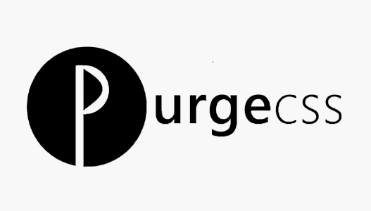

本项目是一个公共css库。
包含了常用的基础样式。您可直接使用里面声明的class样式。
开放源代码
发布在 GitHub 上，方便大家使用这一框架构建更好的web应用，也欢迎大家一起改进。

一个框架、多种设备
你的网站和应用适应各种浏览器。在平板电脑和智能手机上面还有 响应式CSS 可以使用。
丰富的功能
全局使用border-box，不再为box-sizing烦恼。还有12列的栅格结构和丰富的组件。

简单易学
命名方式采用广大开发者普遍使用的名称，如果学习过bootstrap，可以很快地上手。

支持按需打包
如果你只用到的一小部分的功能，可以删除未使用的选择器，从而生成更小的 css 文件。
持续更新
本项目还会不断吸取优秀CSS方案，出新组件，学习还有很长的路要走，在不断进步中。